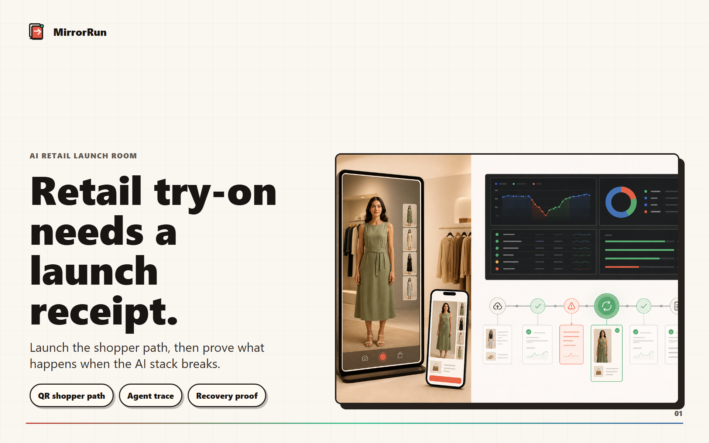
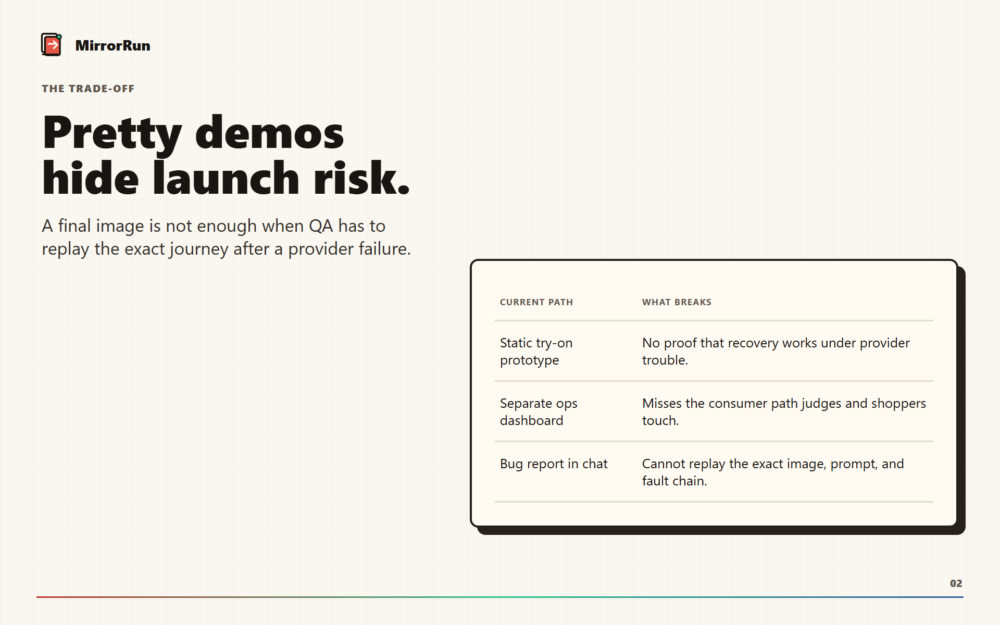
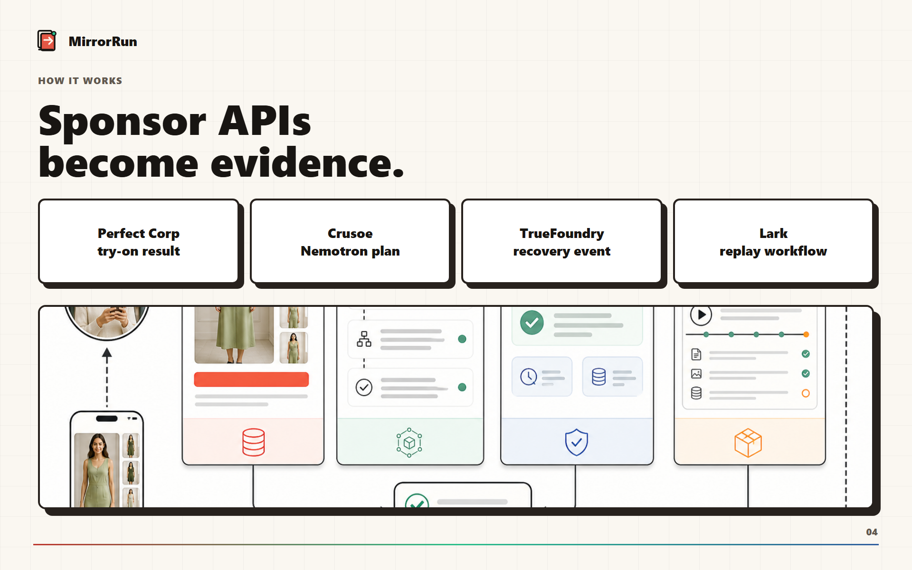
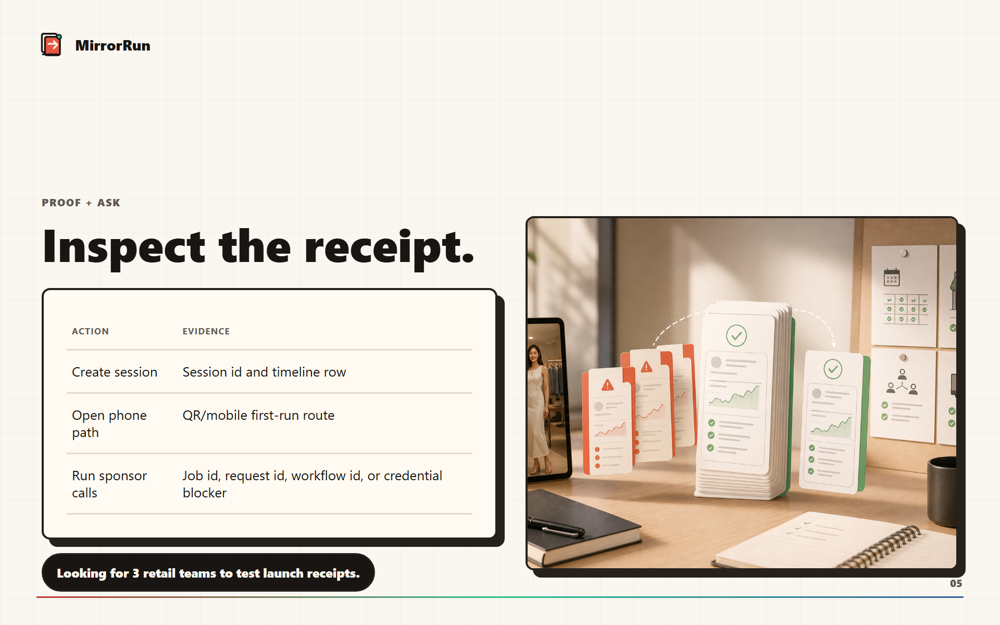

A retail try-on can look polished and still fail the first shopper.

MirrorRun keeps the image, trace, fault, and replay together.

The current capture is honest: missing sponsor keys stay visible.

Sponsor APIs become receipt evidence, not hidden plumbing.

Inspect the receipt, then replace blockers with live proof.
MirrorRun
Try the shopper path. Inspect the receipt. Replace blockers with live sponsor proof.